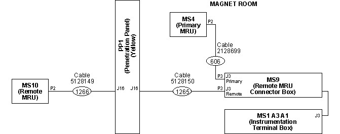

Illustration 4: Remote MRU Penetration Panel Connections

Make sure the 4-pin Lemo Connector P2 end of Run 1266 is at the MRU.
Do not connect Run 1266 to Connector P2 of the MRU at this time.
Illustration 4: Remote MRU Penetration Panel Connections
| NOTE: | The wiring diagram for both single and dual MRU installations is shown in Magnet System Wiring. |
Refer to the appropriate block diagram for dual MRU cabling:
Illustration 5 shows the cabling for Original MRUs.
Illustration 6 shows the cabling for New MRUs.
Illustration 5: Connection Block Diagram (Original Primary and Remote MRU)

Illustration 6: Connection Block Diagram (Primary and Remote MRU)